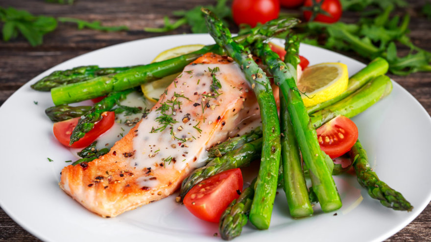

SALMON CON VEGETALES GRILLADOS
Elaboración
Mezclar el aceite, el limón, el estragón y una cucharadita de mostaza.
Untar las postas de pescado de ambos lados y asar en la parrilla.
Para la salsa:
Unir la mostaza restante con la mayonesa y el estragón.
Agregar un chorrito de vino blanco.
Para los vegetales grillados:
Cortar los vegetales en láminas ni muy delgadas ni muy gruesas.
De las cebollas de verdeo, utilizar también las partes verdes.
Lubricar la parrilla con rocío vegetal, y colocar los vegetales.
Condimentar a gusto con sal y pimienta.
Dejar dorar y marcar.
Dar vuelta, volver a condimentar y rociar con un poco más de spray vegetal.
Servir el pescado caliente bañado con parte de la salsa.
La restante incorporarla a los vegetales grillados.
Rinde 4 porciones.
Ingredientes
- Pescado:4 postas gruesas de salmón o atún Sal
- Jugo colado de ½ limón
- 1 cda aceite de oliva
- 1 cdita estragón seco
- 2 cdas mostaza1 cda mayonesa light
Vegetales grillados
| Cantidades | Ingredientes |
|---|---|
| 1 | zucchini grande o 2 pequeños |
| 8 | champignones grandes |
| 1 | hinojo |
| 1 | zanahoria mediana |
| ½ | morrón rojo |
| ½ | morrón amarillo |
| 2 | cebollas de verdeo |